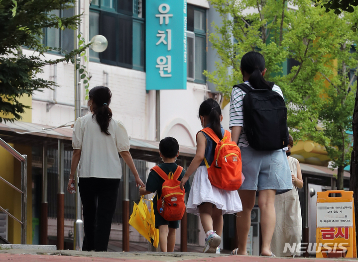

원서 A
- 취업조건
- 맞벌이
- 가족 자격
- 확인 중
- 공통조건
- 다른 우선요건 없음
이 요강으로 분류하면모집요강 확인 ↗
사례 도입 초고 · 전달받은 경험을 정리했으며 당사자 확인 전입니다.
최근 육아휴직을 마치고 복직한 김모씨는 어린이집 입소를 기다리며 애를 태웠다고 한다. 출근할 날은 다가오는데 아이를 맡길 곳은 정해지지 않았다.
전해진 사연에는 다문화가족 우선순위에 대한 의문도 있었다. 다만 김씨가 신청한 어린이집의 신청자별 자격과 점수는 확인되지 않았다.
두 원서 비교하기 ↓
먼저 구분할 것
뉴시스의 ‘자가와 차 두 대’ 보도는 유치원 우선모집에 관한 온라인 전언을 다뤘다. 개별 가구의 재산이나 실제 선발 결과를 확인한 보도는 아니다. [1]
김씨의 어린이집 경험과 별개로, 실제 유치원 한 곳의 모집요강을 두 원서에 적용해봤다.
두 아이 모두 2023년생·한국 국적의 신규 지원자다. 처음에는 다른 우선요건이 없는 것으로 뒀다. B는 한국인과 결혼이민자인 부모를 둔 자녀의 예시다. 우선모집 접수는 2026년 11월 4일 마감됐으며, 당시 요강의 기준을 비교한다.
이 유치원의 우선모집 지원자격을 비교한다. 실제 선발·미선발 결과나 어린이집 대기순번은 아니다. ‘기타 4순위 이하’를 대기 4번이나 합격 보장으로 읽어서는 안 된다.
소득액으로 저소득 자격을 계산하지 않는다. 해당 법정 자격이 있다는 예시를 비교한다. 다른 조건은 한 번에 하나씩만 바꾼다.
원서 A는 다문화가정 항목에 해당하지 않는 가정, B는 한국인과 결혼이민자인 부모·한국 국적 자녀로 이루어져 해당 요강의 다문화가정 항목에 해당하는 가정의 예시다. 부모의 국적만 입력받아 법정 다문화가족 여부를 판정하지 않는다.
최우선·보훈·북한이탈·쌍생아·장애부모·보호시설·한부모·졸업생 동생 등의 다른 자격은 없는 것으로 고정했다. 전체 항목은 아래에서 볼 수 있다. 같은 모집 분류 안의 세부 처리나 개인의 최종 자격은 해당 기관에 확인해야 한다.
인천한빛초 병설유치원의 2027학년도 우선모집 항목이다. 다문화가정은 여러 가족·보호 조건과 함께 ‘기타 4순위 이하’에 들어 있다.
맞벌이 자체는 이 우선모집 표에 없다. 그렇다고 맞벌이 가정 모두가 우선모집에서 제외된다는 뜻은 아니다. 다른 항목에 해당하면 그 기준으로 지원할 수 있다.
재학 유아 · 배치된 특수교육대상자
법정저소득층
국가보훈대상자 가정
북한이탈주민 가정
쌍생아 · 재원 형제자매 · 본교 재학생 형제자매 · 사회적 배려 대상자 · 다자녀 · 다문화가정 · 장애부모 · 한부모 · 졸업생 동생
요강 3·5·6쪽을 정리했다. 재원 형제자매 등에는 입학 이후 함께 다녀야 하는 세부조건이 있다. 적용조건과 증빙은 원문을 확인해야 한다. [2]
요강에 적힌 신규 모집인원은 연령반마다 다르다. 아래 숫자는 2026년 10월 16일 공고 요강에 담긴 계획으로, 현재 빈자리나 경쟁률이 아니다.
우선모집은 선착순이 아닌 시스템 무작위 추첨이며, 선발 또는 미선발로 결과가 나온다. 우선모집 대상이 아니라면 일반모집을 확인해야 한다. 다만 요강은 우선모집에서 해당 연령·과정의 인원이 모두 선발되면 일반모집 선발 인원이 0명이 된다고 안내한다. [2]
일반모집 인원은 우선모집 결과에 따라 달라진다. 이 유치원의 올해 연령반별 선발·등록 결과는 아직 확인하지 않았다.
이 요강의 다문화가정 항목은 국적을 확인할 수 있는 서류로 증빙한다. 주택이나 차량 대수를 확인하는 서류는 해당 항목에 적혀 있지 않다. 한편 법정저소득층은 별도의 1순위 항목이다. 한 항목의 소득조건과 전체 요강을 구분해야 한다. [2]
다문화가족지원법은 귀화자와 출생 때부터 한국 국적인 사람으로 이뤄진 가족도 다문화가족으로 정의한다. 그런데 이 요강은 ‘한국인과 외국인’, ‘귀화 한국인과 외국인’, ‘귀화 한국인과 귀화 한국인’ 세 경우만 적었다. 외국인 부모가 귀화한 뒤에도 지원할 수 있는지는 요강 문언만으로 판단하기 어렵다. 기관 확인이 필요한 부분이다. [2] [3]
어린이집 입소기준에는 맞벌이가 1순위 항목으로 들어간다. 다문화가족도 1순위 항목이다. 이 구분은 유치원 우선모집 순위와 서로 환산할 수 없다. 김씨의 대기 문제를 살피려면 해당 어린이집의 기준부터 확인해야 한다. [4]
이 요강에는 다문화가정이라는 항목이 있고, 맞벌이 자체를 우선하는 항목은 없다. 입학이 확정된 뒤에는 맞벌이 여부와 관계없이 방과후과정에 참여할 수 있다고 안내한다. [2]
이 유치원에서 맞벌이만으로 우선모집 대상이 되지는 않는다. 다만 다자녀나 재원 형제자매 등 다른 항목에 해당하면 지원할 수 있다. 다문화가정 우선항목을 둔 이유와 실제 선발에서 어떤 차이가 생겼는지는 추가 확인이 필요하다.
여기서 확인한 것은 공개 모집요강의 기준이다. 김씨의 대기순번을 결정한 세부 사유, 개별 가정의 경제력, 이번 모집의 실제 충원 결과와 선정 취지에 관한 기관의 개별 설명은 확인하지 못했다. 기관 질의와 김씨의 당사자 확인은 아직 진행하지 않았다.